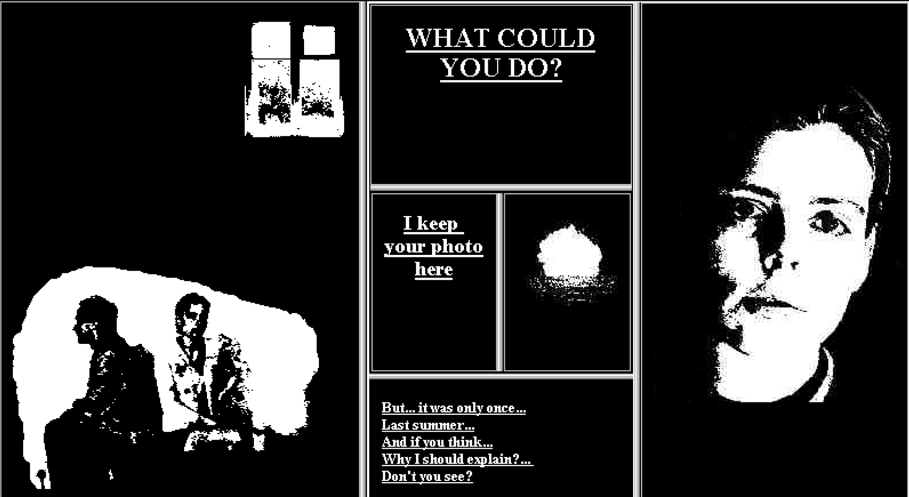
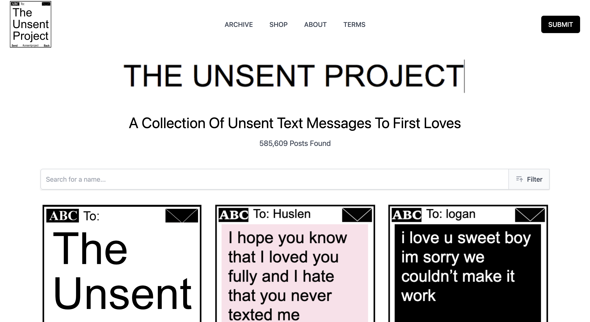
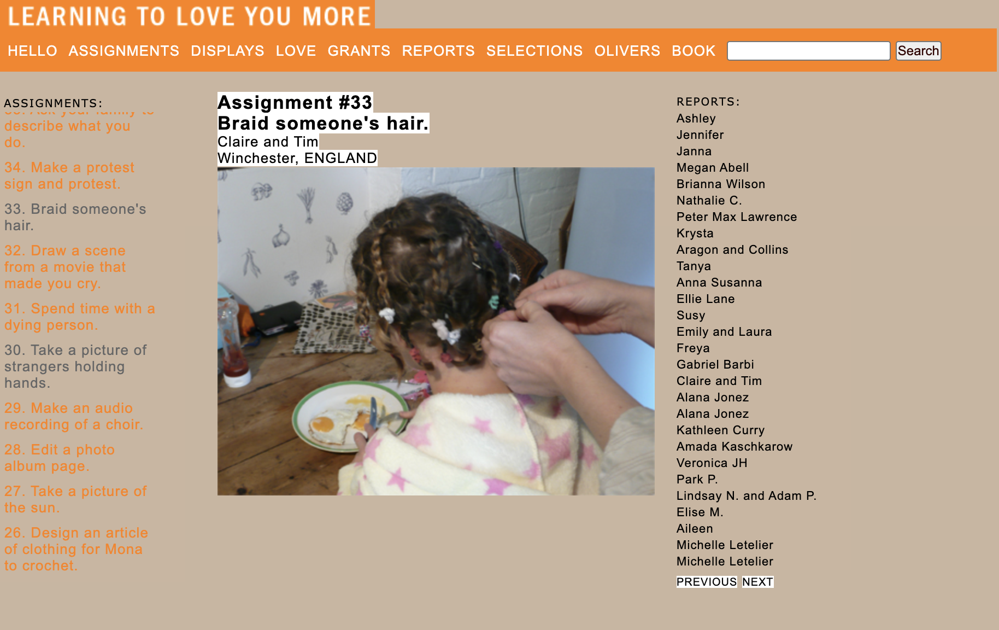

This exhibition is inspired by the idea that “If you look for it, I’ve got a sneaky feeling love, actually … is all around”. It's more than just romance. It is about care, intimacy, and connection that can be found anywhere, even across digital spaces. These net artworks give the internet some feeling where emotions are distributed across interactions, memory, and shared participation.
In My Boyfriend Came Back From the War, there is a fragmented storytelling that mirrors emotional distance, while The Unsent Project captures the vulnerability and longing in messages that were never delivered that shows the private and intimate sides of human connection. Learning To Love You More explores connection through small, meaningful gestures. Together, these works suggest that connection is not rare, but actually everywhere. If we choose to notice it.

My Boyfriend Came Back From the War (1996)
Olia Lialina
A fragmented hypertext narrative exploring emotional distance and uncertainty in relationships.

The Unsent Project (2015)
Rora Blue
A collection of messages never sent, exploring vulnerability, longing, and the private side of human connection.

Learning To Love You More (2002–2009)
Miranda July & Harrell Fletcher
A participatory project centered on small acts of care, creativity, and emotional reflection.